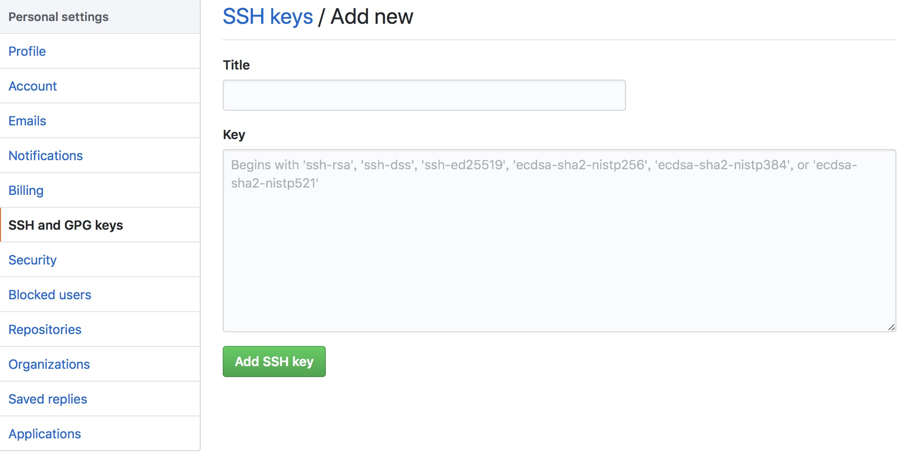
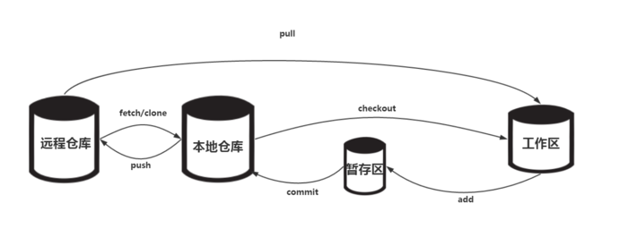

<!DOCTYPE html><html class="theme-next mist" lang="zh-Hans"><head><meta name="generator" content="Hexo 3.9.0"><meta charset="UTF-8"><meta name="baidu-site-verification" content="dil57BBbBc"><meta http-equiv="X-UA-Compatible" content="IE=edge"><meta name="viewport" content="width=device-width,initial-scale=1,maximum-scale=1"><meta name="theme-color" content="#222"><link rel="manifest" href="/manifest.json"><link rel="stylesheet" media="all" href="/lib/Han/dist/han.min.css?v=3.3"><meta http-equiv="Cache-Control" content="no-transform"><meta http-equiv="Cache-Control" content="no-siteapp"><meta name="google-site-verification" content="YH32omENY7b_BdEuIWv46jSBK-0Vyw_dWbJTGNBblT0"><link href="https://cdn.jsdelivr.net/gh/tonsky/FiraCode@1.206/distr/fira_code.css" rel="stylesheet" type="text/css"><link href="/lib/font-awesome/css/font-awesome.min.css?v=4.6.2" rel="stylesheet" type="text/css"><link href="/css/main.css?v=5.1.4" rel="stylesheet" type="text/css"><link rel="apple-touch-icon" sizes="180x180" href="/images/favicon.ico?v=5.1.4"><link rel="icon" type="image/png" sizes="32x32" href="/images/favicon.ico?v=5.1.4"><link rel="icon" type="image/png" sizes="16x16" href="/images/favicon.ico?v=5.1.4"><link rel="icon" type="image/png" sizes="16x16" href="/images/favicon.ico?v=5.1.4"><link rel="icon" type="image/png" sizes="16x16" href="/images/favicon.ico?v=5.1.4"><link rel="icon" type="image/png" sizes="16x16" href="/images/favicon.ico?v=5.1.4"><meta name="keywords" content="git,github,"><meta name="description" content="博客已经搭建好了,自然可以趁热打铁写一些博客搭建的经验.一是方便自己以后查看,免得忘记.二是如果有人想了解博客搭建的过程,也正好有个参考.(如果SEO做的好,就有可能看到这篇文章).本文仅记录怎么去搭建博客,而不会解释每一步原理,有些东西我自己都没有搞的太清楚.毕竟我只是想借助博客这个平台记录平时工作的经验而已,细究相关方面知识并不是我的最终目的.现在回头看博客的搭建过程,可以总结归纳以下几点."><meta name="keywords" content="git,github"><meta property="og:type" content="article"><meta property="og:title" content="Github+Hexo+Next博客搭建之git和GitHub"><meta property="og:url" content="http://www.yexiaochen.com/Github-Hexo-Next博客搭建之git和GitHub/index.html"><meta property="og:site_name" content="贪空"><meta property="og:description" content="博客已经搭建好了,自然可以趁热打铁写一些博客搭建的经验.一是方便自己以后查看,免得忘记.二是如果有人想了解博客搭建的过程,也正好有个参考.(如果SEO做的好,就有可能看到这篇文章).本文仅记录怎么去搭建博客,而不会解释每一步原理,有些东西我自己都没有搞的太清楚.毕竟我只是想借助博客这个平台记录平时工作的经验而已,细究相关方面知识并不是我的最终目的.现在回头看博客的搭建过程,可以总结归纳以下几点."><meta property="og:locale" content="zh-Hans"><meta property="og:image" content="http://www.yexiaochen.com/images/SSH.png"><meta property="og:image" content="http://www.yexiaochen.com/images/git.png"><meta property="og:updated_time" content="2019-11-26T14:16:27.602Z"><meta name="twitter:card" content="summary"><meta name="twitter:title" content="Github+Hexo+Next博客搭建之git和GitHub"><meta name="twitter:description" content="博客已经搭建好了,自然可以趁热打铁写一些博客搭建的经验.一是方便自己以后查看,免得忘记.二是如果有人想了解博客搭建的过程,也正好有个参考.(如果SEO做的好,就有可能看到这篇文章).本文仅记录怎么去搭建博客,而不会解释每一步原理,有些东西我自己都没有搞的太清楚.毕竟我只是想借助博客这个平台记录平时工作的经验而已,细究相关方面知识并不是我的最终目的.现在回头看博客的搭建过程,可以总结归纳以下几点."><meta name="twitter:image" content="http://www.yexiaochen.com/images/SSH.png"><script type="text/javascript" id="hexo.configurations">var NexT=window.NexT||{},CONFIG={root:"/",scheme:"Mist",version:"5.1.4",sidebar:{position:"left",display:"hide",offset:12,b2t:!1,scrollpercent:!1,onmobile:!0},fancybox:!1,tabs:!0,motion:{enable:!1,async:!1,transition:{post_block:"fadeIn",post_header:"slideDownIn",post_body:"slideDownIn",coll_header:"slideLeftIn",sidebar:"slideUpIn"}},duoshuo:{userId:"0",author:"博主"},algolia:{applicationID:"",apiKey:"",indexName:"",hits:{per_page:10},labels:{input_placeholder:"Search for Posts",hits_empty:"We didn't find any results for the search: ${query}",hits_stats:"${hits} results found in ${time} ms"}}}</script><link rel="canonical" href="http://www.yexiaochen.com/Github-Hexo-Next博客搭建之git和GitHub/"><title>Github+Hexo+Next博客搭建之git和GitHub | 贪空</title><script type="text/javascript">var _hmt=_hmt||[];!function(){var e=document.createElement("script");e.src="https://hm.baidu.com/hm.js?ad8db08f31eca01d048b60d4299de095";var t=document.getElementsByTagName("script")[0];t.parentNode.insertBefore(e,t)}()</script></head><body itemscope itemtype="http://schema.org/WebPage" lang="zh-Hans"><div class="container sidebar-position-left page-post-detail"><div class="headband"></div><header id="header" class="header" itemscope itemtype="http://schema.org/WPHeader"><div class="header-inner"><div class="site-brand-wrapper"><div class="site-meta"><div class="custom-logo-site-title"><a href="/" class="brand" rel="start"><span class="logo-line-before"><i></i></span> <span class="site-title">贪空</span> <span class="logo-line-after"><i></i></span></a></div><h1 class="site-subtitle" itemprop="description">贪空 Blog</h1></div><div class="site-nav-toggle"><button><span class="btn-bar"></span> <span class="btn-bar"></span> <span class="btn-bar"></span></button></div></div><nav class="site-nav"><ul id="menu" class="menu"><li class="menu-item menu-item-home"><a href="/" rel="section"><i class="menu-item-icon fa fa-fw fa-home"></i><br>首页</a></li><li class="menu-item menu-item-tags"><a href="/tags/" rel="section"><i class="menu-item-icon fa fa-fw fa-tags"></i><br>标签</a></li><li class="menu-item menu-item-categories"><a href="/categories/" rel="section"><i class="menu-item-icon fa fa-fw fa-th"></i><br>分类</a></li><li class="menu-item menu-item-archives"><a href="/archives/" rel="section"><i class="menu-item-icon fa fa-fw fa-archive"></i><br>归档</a></li></ul></nav></div></header><main id="main" class="main"><div class="main-inner"><div class="content-wrap"><div id="content" class="content"><div id="posts" class="posts-expand"><article class="post post-type-normal" itemscope itemtype="http://schema.org/Article"><div class="post-block"><link itemprop="mainEntityOfPage" href="http://www.yexiaochen.com/Github-Hexo-Next博客搭建之git和GitHub/"><span hidden itemprop="author" itemscope itemtype="http://schema.org/Person"><meta itemprop="name" content="贪空"><meta itemprop="description" content><meta itemprop="image" content="/images/avatar.jpeg"></span><span hidden itemprop="publisher" itemscope itemtype="http://schema.org/Organization"><meta itemprop="name" content="贪空"></span><header class="post-header"><h2 class="post-title" itemprop="name headline">Github+Hexo+Next博客搭建之git和GitHub</h2><div class="post-meta"><span class="post-time"><span class="post-meta-item-icon"><i class="fa fa-calendar-o"></i> </span><span class="post-meta-item-text">发表于</span> <time title="创建于" itemprop="dateCreated datePublished" datetime="2018-04-07T11:32:03+08:00">2018-04-07 </time><span class="post-meta-divider">|</span> <span class="post-meta-item-icon"><i class="fa fa-calendar-check-o"></i> </span><span class="post-meta-item-text">更新于&#58;</span> <time title="更新于" itemprop="dateModified" datetime="2019-11-26T22:16:27+08:00">2019-11-26 </time></span><span class="post-category"><span class="post-meta-divider">|</span> <span class="post-meta-item-icon"><i class="fa fa-folder-o"></i> </span><span class="post-meta-item-text">分类于</span> <span itemprop="about" itemscope itemtype="http://schema.org/Thing"><a href="/categories/善事利器/" itemprop="url" rel="index"><span itemprop="name">善事利器</span></a></span></span><div class="post-wordcount"><span class="post-meta-item-icon"><i class="fa fa-file-word-o"></i> </span><span class="post-meta-item-text">字数统计&#58;</span> <span title="字数统计">2,720 字 </span><span class="post-meta-divider">|</span> <span class="post-meta-item-icon"><i class="fa fa-clock-o"></i> </span><span class="post-meta-item-text">阅读时长 &asymp;</span> <span title="阅读时长">10 分钟</span></div></div></header><div class="post-body han-init-context" itemprop="articleBody"><blockquote><p>博客已经搭建好了,自然可以趁热打铁写一些博客搭建的经验.一是方便自己以后查看,免得忘记.二是如果有人想了解博客搭建的过程,也正好有个参考.(如果SEO做的好,就有可能看到这篇文章).本文仅记录怎么去搭建博客,而不会解释每一步原理,有些东西我自己都没有搞的太清楚.毕竟我只是想借助博客这个平台记录平时工作的经验而已,细究相关方面知识并不是我的最终目的.</p></blockquote><p><em>现在回头看博客的搭建过程,可以总结归纳以下几点. <strong>markdown</strong>,<strong>git和GitHub</strong>,<strong>github和coding部署</strong>, <strong>Hexo和Next了解</strong>, <strong>SEO</strong>等</em></p><p><strong>git和GitHub</strong></p><p><em>接下来会按一下流程展开,本地git配置 =&gt; 关联远程仓库 =&gt; 初始化仓库.由于博主使用的Mac,执行命令时会和window下cmd有所区别.</em></p><h2 id="git配置"><a href="#git配置" class="headerlink" title="git配置"></a>git配置</h2><ol><li><p>完成git 的安装后,在使用之前需要配置一些全局参数, 如username和email.因为GitHub每次commit都会记录它们.</p><pre><code>git config --global user.name &quot;username&quot;

git config --global user.email &quot;email&quot;
</code></pre></li><li><p>除了username和email外,还有许多自定义配置,示例:</p><pre><code>git config --global color.ui true    // git输出显示不同颜色

git config --global ignorecase true    // git对仓库中的文件大小写敏感

git config --global alias.st status    // git提供alias的功能,git status缩写为git st

git config --global apply.whitespace nowarn // git忽略空白的变化
</code></pre></li><li><p>查看所有已经做出的配置:</p><pre><code>git config -l
或
git config --list
</code></pre></li></ol><h2 id="添加远程仓库"><a href="#添加远程仓库" class="headerlink" title="添加远程仓库"></a>添加远程仓库</h2><p>首先在<a href="https://github.com" rel="external nofollow noopener noreferrer" target="_blank">github官网</a>有自己的账号,之后就可以创建仓库了.</p><h3 id="添加SSH-Key"><a href="#添加SSH-Key" class="headerlink" title="添加SSH Key"></a>添加SSH Key</h3><p>由于你的本地Git仓库和github仓库之间的传输是通过SSH加密的,所以需执行以下步骤:</p><ol><li><p>本地创建ssh key.</p><pre><code>$ ssh-keygen -t rsa -C &quot;your_email@youremail.com&quot;
</code></pre><p>后面的<a href="mailto:your_email@youremail.com" rel="external nofollow noopener noreferrer" target="_blank">your_email@youremail.com</a>改为你在github上注册的邮箱,之后会要求确认路径和输入密码,我们默认一路回车就行.成功的话会在~/下生成.ssh文件夹,进去打开id_rsa.pub,复制里面的key.</p><pre><code>ls -al ~/.ssh    // 查看是否存在id_rsa.pub,若存在,执行下一步;

cd ~/.ssh    // 进入.ssh目录

cat id_rsa.pub    // 查看复制id_rsa.pub
</code></pre></li><li><p>在GitHub里添加复制的id_rsa.pub. Settings =&gt; SSH and GPG keys =&gt;New SSH key.操作之后,如图示:<br><br>Title任意填写,Key填入之前复制的id_rsa.pub.点击Add SSH key,添加已经完成.</p></li><li><p>验证是否成功,输入下列命令:</p><pre><code>ssh -T git@github.com
</code></pre><p>如果是第一次的会提示是否continue,输入yes就会看到:You’ve successfully authenticated,but GitHub does not provide shell access.这就表示已成功连上github.</p></li></ol><h3 id="创建GitHub项目并添加远程仓库"><a href="#创建GitHub项目并添加远程仓库" class="headerlink" title="创建GitHub项目并添加远程仓库"></a>创建GitHub项目并添加远程仓库</h3><p>登陆github账户后,点击<code>New repository</code>, 会有Create a new repository页面,填写相关信息,点击<code>Create repository</code>,可以根据官网提供的方式添加远程仓库.如下:</p><p><strong>…or create a new repository on the command line</strong></p><pre><code>echo &quot;# something&quot; &gt;&gt; README.md    // 生成readme.md

git init    // 初始化本地仓库

git add README.md    // 将文件添加到暂存区

git commit -m &quot;first commit&quot;    // 将暂存区文件提交到仓库中

git remote add origin git@github.com:your-repository    // 添加你的远程仓库

git push -u origin master    // 将本地仓库推送到远程仓库
</code></pre><p><strong>…or push an existing repository from the command line</strong></p><pre><code>git remote add origin git@github.com:your-repository

git push -u origin master
</code></pre><p style="color:#4aa9aa;font-size:18px;font-weight:700">以上步骤完成了本地仓库到远程仓库的连接,接下来总结git的一些常用的命令</p><p><strong>深入了解可参考 <a href="https://git-scm.com/book/zh/v2" rel="external nofollow noopener noreferrer" target="_blank">git中文</a></strong></p><h2 id="git的常用命令"><a href="#git的常用命令" class="headerlink" title="git的常用命令"></a>git的常用命令</h2><p></p><h3 id="状态和工作区域"><a href="#状态和工作区域" class="headerlink" title="状态和工作区域"></a>状态和工作区域</h3><ul><li><p>三种状态</p><p>已提交: 表示数据已经安全得保存在本地数据库中.</p><p>已修改: 表示修改了文件,但还没保存到数据库中.</p><p>已暂存: 表示对一个已修改文件的当前版本做了标记,使之包含在下次提交的快照中.</p></li><li><p>三种工作区域</p><p>Git仓库目录: 是Git用来保存项目的元数据和对象数据库的地方.这是Git中最重要的部分,从其他计算机克隆仓库时,拷贝的就是这里的数据.</p><p>工作目录: 对项目的某个版本独立提取出来的内容.这些从Git仓库的压缩数据库中提取出来的文件,放在磁盘上供你使用或修改.</p><p>暂存区: 是一个文件,保存了下次将提交的文件列表信息,一般在Git仓库目录中.有时也被称作’索引’.</p></li><li><p>工作目录下的两种状态</p><p>已跟踪: 指被纳入了版本控制的文件,在上一次<a href="https://git-scm.com/book/zh/v2/起步-Git-基础" rel="external nofollow noopener noreferrer" target="_blank">快照</a>中有它们的记录,在工作一段时间后,它们的状态可能处于为修改,已修改或已暂存.</p><p>未跟踪: 工作目录中除了已跟踪文件以外的所有其它文件都属于未跟踪文件,它们既不存在与上次快照中,也没有放入暂存区.</p><p><em>初次克隆某个仓库的时候,工作目录中的所有文件都属于已跟踪文件,并处于未修改状态.</em></p></li></ul><h3 id="Git工作流程"><a href="#Git工作流程" class="headerlink" title="Git工作流程"></a>Git工作流程</h3><p>基本的 Git 工作流程如下：</p><ol><li>在工作目录中修改文件.</li><li>暂存文件,将文件的快照放入暂存区域.</li><li>提交更新,找到暂存区域的文件,将快照永久性存储到 Git 仓库目录.</li></ol><p>如果 Git 目录中保存着的特定版本文件,就属于已提交状态. 如果作了修改并已放入暂存区域，就属于已暂存状态.如果自上次取出后,作了修改但还没有放到暂存区域,就是已修改状态.</p><h3 id="基础操作"><a href="#基础操作" class="headerlink" title="基础操作"></a>基础操作</h3><h4 id="初始化Git仓库"><a href="#初始化Git仓库" class="headerlink" title="初始化Git仓库"></a>初始化Git仓库</h4><pre><code>git init
</code></pre><p>该命令将创建一个名为.git的子目录,这个子目录含有初始化的Git仓库中所有的必须文件</p><h4 id="添加文件到暂存区"><a href="#添加文件到暂存区" class="headerlink" title="添加文件到暂存区"></a>添加文件到暂存区</h4><pre><code>git add &lt;file&gt;    // 添加单个文件到暂存区

git add .   // &apos;.&apos; 表示所有文件、文件夹和子文件夹
</code></pre><h4 id="添加文件到仓库"><a href="#添加文件到仓库" class="headerlink" title="添加文件到仓库"></a>添加文件到仓库</h4><pre><code>git commit      // 将暂存区的文件提交到仓库中

git commit -m &apos;提交信息&apos;      // -m 带提交信息,说明本次提交内容或修改等

git commit -am     // -a Git会自动把所有已经跟踪过的文件暂存一并提交,从而跳过git add步骤
</code></pre><h4 id="查看文件状态"><a href="#查看文件状态" class="headerlink" title="查看文件状态"></a>查看文件状态</h4><pre><code>git status      // 查看哪些文件处于什么状态

git status -s       // git status -short 输出简介显示

??  filename-1      // 新添加未跟踪文件前面有??标记

A   filename-2      // 新添加到暂存区文件前有A标记

M   filename-3      // 出现在左边的M表示,该文件被修改了并放入了暂存区

 M  filename-4      // 出现在右边的M表示该文件被修改了但没放入暂存取

MM  filename-5      // 同时出现表示在工作区被修改并提交到暂存区由于在工作区中被修改了,所以说暂存区和工作区都有该文件的修改记录
</code></pre><h4 id="查看文件具体修改"><a href="#查看文件具体修改" class="headerlink" title="查看文件具体修改"></a>查看文件具体修改</h4><pre><code>git diff        // 该命令查看未暂存的文件更新了哪些部分,用于比较工作目录中当前文件和暂存区域快照之间的差异

git diff  --cached      // 该命令用于查看已暂存的将要添加到下次提交里的内容 (Git 1.6.1 及更高版本还允许使用 git diff --staged，效果是相同的)
</code></pre><h4 id="查看提交历史"><a href="#查看提交历史" class="headerlink" title="查看提交历史"></a>查看提交历史</h4><pre><code>git log     // 按提交时间列出所有的更新,最新的更新排在最上面

git log -p -(n)       // -p 用来显示每次提交的内容差异. -(n) 仅显示最近n次提交

git log --stat      // 每次的简略的统计信息

git log --pretty=oneline        // 该选项指定使用不同于默认格式的方式展示提交历史. 可用选项包括oneline,short,full,fuller和format(后跟指定格式)

git log --shortstat     // 只显示--stat中最后的行数修改添加移除统计

git log --name-only     // 仅在提交信息后显示已修改的文件清单

git log --name-status       // 显示新增、修改、删除的文件清单

git log --graph     // 显示ASCLL图形表示的分支合并历史

git relog       // 引用日志,记录了HEAD和分支引用所指向的历史,只存在在于本地仓库
</code></pre><h4 id="撤销操作"><a href="#撤销操作" class="headerlink" title="撤销操作"></a>撤销操作</h4><pre><code>git reset HEAD &lt;file&gt;       // 丢弃已经进入暂存取的修改

git checkout -- &lt;file&gt;      // 丢弃工作区中文件的修改

git checkout -- .       // 丢弃当前目录下所有工作区中的修改
</code></pre><h4 id="退回到某个提交版本"><a href="#退回到某个提交版本" class="headerlink" title="退回到某个提交版本"></a>退回到某个提交版本</h4><pre><code>git reset --hard HEAD^      // 回退到上一个提交

git reset --hard HEAD^^     // 回退到上上一个提交

git reset --hard &lt;commit_id&gt;        // 回退到指定id的提交版本
</code></pre><h4 id="删除操作"><a href="#删除操作" class="headerlink" title="删除操作"></a>删除操作</h4><p>在文件未添加到暂存取之前,可以直接物理删除想要删除的文件.或通过<code>git checkout -- &lt;file&gt;</code> 来丢弃修改.如果文件已经被提交,则需要<code>git rm</code>删除</p><pre><code>git rm &lt;file&gt;      //  删除被提交的文件
</code></pre><h3 id="远程仓库"><a href="#远程仓库" class="headerlink" title="远程仓库"></a>远程仓库</h3><h4 id="查看远程仓库"><a href="#查看远程仓库" class="headerlink" title="查看远程仓库"></a>查看远程仓库</h4><pre><code>git remote      // 查看已配置的远程仓库服务器

git remote -v       // 显示需要读写远程仓库使用的Git保存的简写与对应的URL

git remote show &lt;remote-name&gt;       // 查看某一个远程仓库的更多信息
</code></pre><h4 id="添加远程仓库-1"><a href="#添加远程仓库-1" class="headerlink" title="添加远程仓库"></a>添加远程仓库</h4><pre><code>git remote add &lt;remote-name&gt; &lt;url&gt;        // 添加地址为URL,名为remote-name的引用
</code></pre><h4 id="从远程仓库中拉取与推送"><a href="#从远程仓库中拉取与推送" class="headerlink" title="从远程仓库中拉取与推送"></a>从远程仓库中拉取与推送</h4><pre><code>git fetch &lt;remote-name&gt;     // 该命令将数据拉取到本地仓库,并不会自动合并或修改当前的工作

git pull &lt;remote-name&gt;      // 改命令自动抓取然后合并远程分支到当前分支

git push &lt;remote-name&gt; &lt;branch-name&gt;        // 将branch-name分支推送到remote-name服务器上

git push -u &lt;remote-name&gt; &lt;branch-name&gt;     // 第一次使用带上-u参数,在将本地的 master 分支推送到远程新的 master 分支的同时,还会把本地的 master 分支和远程的 master 分支关联起来
</code></pre><h4 id="远程仓库的移除与重命名"><a href="#远程仓库的移除与重命名" class="headerlink" title="远程仓库的移除与重命名"></a>远程仓库的移除与重命名</h4><pre><code>git remote rm &lt;remote-name&gt;      // 移除远程仓库

git remote rename &lt;old-name&gt; &lt;new-name&gt;        // 重命名远程仓库
</code></pre><h4 id="修改本地仓库对应的远程仓库"><a href="#修改本地仓库对应的远程仓库" class="headerlink" title="修改本地仓库对应的远程仓库"></a>修改本地仓库对应的远程仓库</h4><pre><code>git remote set-url &lt;remote-name&gt; &lt;url&gt;        // 当远程的仓库地址发生变化时,需要修改本地仓库对应的远程仓库地址
</code></pre><h3 id="分支管理"><a href="#分支管理" class="headerlink" title="分支管理"></a>分支管理</h3><pre><code>git branch      // 查看本地分支信息, 输出内容中,标记*,表示当前所在分支

git branch -v       // 查看详细的本地分支信息

git branch &lt;branch-name&gt;     // 新建一个branch-name分支

git checkout &lt;branch-name&gt;        // 新建完branch-name分支后,并通过该命令切到branch-name分支

git checkout master
git merge &lt;branch-name&gt;      // 切换回master分支,并将branch-name分支的修改合并到master分支

git branch -d &lt;branch-name&gt;       // 删除branch-name分支
</code></pre></div><div><div><div style="text-align:center;color:#555;font-size:18px">------------- The End -------------</div></div></div><div><ul class="post-copyright"><li class="post-copyright-author"><strong>本文作者：</strong> 贪空</li><li class="post-copyright-link"><strong>本文链接：</strong> <a href="http://www.yexiaochen.com/Github-Hexo-Next博客搭建之git和GitHub/" title="Github+Hexo+Next博客搭建之git和GitHub">http://www.yexiaochen.com/Github-Hexo-Next博客搭建之git和GitHub/</a></li><li class="post-copyright-license"><strong>版权声明： </strong>本博客所有文章除特别声明外，均采用 <a href="https://creativecommons.org/licenses/by-nc-sa/3.0/" rel="external nofollow noopener noreferrer" target="_blank">CC BY-NC-SA 3.0</a> 许可协议。转载请注明出处！</li></ul></div><footer class="post-footer"><div class="post-tags"><a href="/tags/git/" rel="tag"><i class="fa fa-tag"></i> git</a> <a href="/tags/github/" rel="tag"><i class="fa fa-tag"></i> github</a></div><div class="post-nav"><div class="post-nav-next post-nav-item"><a href="/Github-Hexo-Next博客搭建之Markdown/" rel="next" title="Github+Hexo+Next博客搭建之Markdown"><i class="fa fa-chevron-left"></i> Github+Hexo+Next博客搭建之Markdown</a></div><span class="post-nav-divider"></span><div class="post-nav-prev post-nav-item"><a href="/Github-Hexo-Next博客搭建之Hexo-Next及部署/" rel="prev" title="Github+Hexo+Next博客搭建之Hexo,Next及部署">Github+Hexo+Next博客搭建之Hexo,Next及部署 <i class="fa fa-chevron-right"></i></a></div></div></footer></div></article><div class="post-spread"></div></div></div><div class="comments" id="comments"><div onclick="showGitment()" id="gitment-display-button">显示评论</div><div id="gitment-container" style="display:none"></div></div></div><div class="sidebar-toggle"><div class="sidebar-toggle-line-wrap"><span class="sidebar-toggle-line sidebar-toggle-line-first"></span> <span class="sidebar-toggle-line sidebar-toggle-line-middle"></span> <span class="sidebar-toggle-line sidebar-toggle-line-last"></span></div></div><aside id="sidebar" class="sidebar"><div id="sidebar-dimmer"></div><div class="sidebar-inner"><ul class="sidebar-nav motion-element"><li class="sidebar-nav-toc sidebar-nav-active" data-target="post-toc-wrap">文章目录</li><li class="sidebar-nav-overview" data-target="site-overview-wrap">站点概览</li></ul><section class="site-overview-wrap sidebar-panel"><div class="site-overview"><div class="site-author motion-element" itemprop="author" itemscope itemtype="http://schema.org/Person"><p class="site-author-name" itemprop="name">贪空</p><p class="site-description motion-element" itemprop="description"></p></div><nav class="site-state motion-element"><div class="site-state-item site-state-posts"><a href="/archives/"><span class="site-state-item-count">68</span> <span class="site-state-item-name">日志</span></a></div><div class="site-state-item site-state-categories"><a href="/categories/index.html"><span class="site-state-item-count">11</span> <span class="site-state-item-name">分类</span></a></div><div class="site-state-item site-state-tags"><a href="/tags/index.html"><span class="site-state-item-count">118</span> <span class="site-state-item-name">标签</span></a></div></nav><div class="links-of-author motion-element"><span class="links-of-author-item"><a href="mailto:2277438436@qq.com" target="_blank" title="E-Mail" rel="external nofollow noopener noreferrer"><i class="fa fa-fw fa-envelope"></i>E-Mail</a></span></div></div></section><section class="post-toc-wrap motion-element sidebar-panel sidebar-panel-active"><div class="post-toc"><div class="post-toc-content"><ol class="nav"><li class="nav-item nav-level-2"><a class="nav-link" href="#git配置"><span class="nav-number">1.</span> <span class="nav-text">git配置</span></a></li><li class="nav-item nav-level-2"><a class="nav-link" href="#添加远程仓库"><span class="nav-number">2.</span> <span class="nav-text">添加远程仓库</span></a><ol class="nav-child"><li class="nav-item nav-level-3"><a class="nav-link" href="#添加SSH-Key"><span class="nav-number">2.1.</span> <span class="nav-text">添加SSH Key</span></a></li><li class="nav-item nav-level-3"><a class="nav-link" href="#创建GitHub项目并添加远程仓库"><span class="nav-number">2.2.</span> <span class="nav-text">创建GitHub项目并添加远程仓库</span></a></li></ol></li><li class="nav-item nav-level-2"><a class="nav-link" href="#git的常用命令"><span class="nav-number">3.</span> <span class="nav-text">git的常用命令</span></a><ol class="nav-child"><li class="nav-item nav-level-3"><a class="nav-link" href="#状态和工作区域"><span class="nav-number">3.1.</span> <span class="nav-text">状态和工作区域</span></a></li><li class="nav-item nav-level-3"><a class="nav-link" href="#Git工作流程"><span class="nav-number">3.2.</span> <span class="nav-text">Git工作流程</span></a></li><li class="nav-item nav-level-3"><a class="nav-link" href="#基础操作"><span class="nav-number">3.3.</span> <span class="nav-text">基础操作</span></a><ol class="nav-child"><li class="nav-item nav-level-4"><a class="nav-link" href="#初始化Git仓库"><span class="nav-number">3.3.1.</span> <span class="nav-text">初始化Git仓库</span></a></li><li class="nav-item nav-level-4"><a class="nav-link" href="#添加文件到暂存区"><span class="nav-number">3.3.2.</span> <span class="nav-text">添加文件到暂存区</span></a></li><li class="nav-item nav-level-4"><a class="nav-link" href="#添加文件到仓库"><span class="nav-number">3.3.3.</span> <span class="nav-text">添加文件到仓库</span></a></li><li class="nav-item nav-level-4"><a class="nav-link" href="#查看文件状态"><span class="nav-number">3.3.4.</span> <span class="nav-text">查看文件状态</span></a></li><li class="nav-item nav-level-4"><a class="nav-link" href="#查看文件具体修改"><span class="nav-number">3.3.5.</span> <span class="nav-text">查看文件具体修改</span></a></li><li class="nav-item nav-level-4"><a class="nav-link" href="#查看提交历史"><span class="nav-number">3.3.6.</span> <span class="nav-text">查看提交历史</span></a></li><li class="nav-item nav-level-4"><a class="nav-link" href="#撤销操作"><span class="nav-number">3.3.7.</span> <span class="nav-text">撤销操作</span></a></li><li class="nav-item nav-level-4"><a class="nav-link" href="#退回到某个提交版本"><span class="nav-number">3.3.8.</span> <span class="nav-text">退回到某个提交版本</span></a></li><li class="nav-item nav-level-4"><a class="nav-link" href="#删除操作"><span class="nav-number">3.3.9.</span> <span class="nav-text">删除操作</span></a></li></ol></li><li class="nav-item nav-level-3"><a class="nav-link" href="#远程仓库"><span class="nav-number">3.4.</span> <span class="nav-text">远程仓库</span></a><ol class="nav-child"><li class="nav-item nav-level-4"><a class="nav-link" href="#查看远程仓库"><span class="nav-number">3.4.1.</span> <span class="nav-text">查看远程仓库</span></a></li><li class="nav-item nav-level-4"><a class="nav-link" href="#添加远程仓库-1"><span class="nav-number">3.4.2.</span> <span class="nav-text">添加远程仓库</span></a></li><li class="nav-item nav-level-4"><a class="nav-link" href="#从远程仓库中拉取与推送"><span class="nav-number">3.4.3.</span> <span class="nav-text">从远程仓库中拉取与推送</span></a></li><li class="nav-item nav-level-4"><a class="nav-link" href="#远程仓库的移除与重命名"><span class="nav-number">3.4.4.</span> <span class="nav-text">远程仓库的移除与重命名</span></a></li><li class="nav-item nav-level-4"><a class="nav-link" href="#修改本地仓库对应的远程仓库"><span class="nav-number">3.4.5.</span> <span class="nav-text">修改本地仓库对应的远程仓库</span></a></li></ol></li><li class="nav-item nav-level-3"><a class="nav-link" href="#分支管理"><span class="nav-number">3.5.</span> <span class="nav-text">分支管理</span></a></li></ol></li></ol></div></div></section></div></aside></div></main><footer id="footer" class="footer"><div class="footer-inner"><div class="copyright">&copy; 2018 &mdash; <span itemprop="copyrightYear">2023</span> <span class="with-love"><i class="fa fa-user"></i> </span><span class="author" itemprop="copyrightHolder">贪空</span></div></div></footer><div class="back-to-top"><i class="fa fa-arrow-up"></i></div></div><script type="text/javascript">"[object Function]"!==Object.prototype.toString.call(window.Promise)&&(window.Promise=null)</script><script type="text/javascript" src="/lib/jquery/index.js?v=2.1.3"></script><script type="text/javascript" src="/lib/fastclick/lib/fastclick.min.js?v=1.0.6"></script><script type="text/javascript" src="/lib/jquery_lazyload/jquery.lazyload.js?v=1.9.7"></script><script type="text/javascript" src="/lib/velocity/velocity.min.js?v=1.2.1"></script><script type="text/javascript" src="/lib/velocity/velocity.ui.min.js?v=1.2.1"></script><script type="text/javascript" src="/js/src/utils.js?v=5.1.4"></script><script type="text/javascript" src="/js/src/motion.js?v=5.1.4"></script><script type="text/javascript" src="/js/src/scrollspy.js?v=5.1.4"></script><script type="text/javascript" src="/js/src/post-details.js?v=5.1.4"></script><script type="text/javascript" src="/js/src/bootstrap.js?v=5.1.4"></script><link rel="stylesheet" href="https://cdn.jsdelivr.net/npm/gitalk@1/dist/gitalk.css"><script src="https://cdn.jsdelivr.net/npm/gitalk@1/dist/gitalk.min.js"></script><style>a.gitment-editor-footer-tip{display:none}.gitment-container.gitment-footer-container{display:none}</style><script type="text/javascript">function renderGitment(){new Gitalk({id:window.decodeURIComponent(window.location.pathname),owner:"yexiaochen",repo:"blogComments",distractionFreeMode:!1,admin:["yexiaochen"],clientSecret:"5df7f4f6edb8a65fef2d0cf7cb6fa40b04a44525",clientID:"fad749b2b67be41f767a"}).render("gitment-container")}function showGitment(){document.getElementById("gitment-display-button").style.display="none",document.getElementById("gitment-container").style.display="block",renderGitment()}</script><script>!function(){var t=document.createElement("script"),e=window.location.protocol.split(":")[0];t.src="https"===e?"https://zz.bdstatic.com/linksubmit/push.js":"http://push.zhanzhang.baidu.com/push.js";var s=document.getElementsByTagName("script")[0];s.parentNode.insertBefore(t,s)}()</script></body></html>